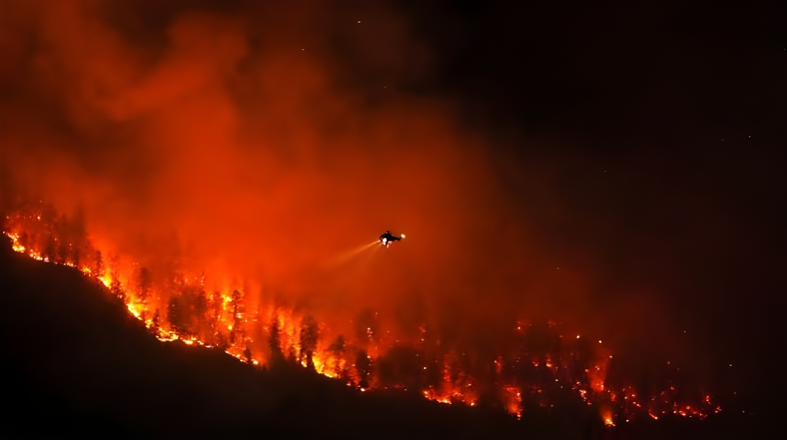

Depuis la mi-mai 2026, le Canada affronte une nouvelle saison d'incendies de forêt d'ampleur : près de 4 800 feux et plus de 4 millions d'hectares brûlés au 18 août. À la mi-juillet, un épisode spectaculaire de fumée transfrontalière a placé plus de 100 millions d'Américains sous alerte à la qualité de l'air, ravivant les tensions entre Ottawa et Washington en pleine saison des feux.
Le début de la saison 2026 a été plus lent que lors des étés 2023 et 2025, les deux pires années d'incendies jamais enregistrées au Canada. Au 10 juin, le pays comptait 1 747 feux et 166 400 hectares brûlés, une activité jugée inférieure à la moyenne quinquennale par Sécurité publique Canada. Mais la chaleur prolongée, la faible humidité et la sécheresse se sont accentuées tout au long de l'été, faisant grimper le risque d'incendie dans plusieurs régions du pays.
Au 18 août, le bilan officiel du gouvernement fédéral fait état de 4 793 feux et 4,1 millions d'hectares brûlés depuis janvier — un total inférieur aux 7,7 millions d'hectares constatés à la même date en 2025, malgré un nombre de feux légèrement supérieur. Le gouvernement prévoit un risque d'incendie élevé qui devrait se prolonger jusqu'au début de l'automne, notamment dans le nord de la Colombie-Britannique, au Yukon, dans les Territoires du Nord-Ouest et au nord-ouest du Québec.
Un pompier de 40 ans meurt d'un malaise cardiaque en luttant contre le feu de Moschelle, dans le comté d'Annapolis (Nouvelle-Écosse) — premier décès confirmé de la saison.
1 747 feux recensés depuis le 1er janvier, 166 400 hectares brûlés : un début de saison sous la moyenne des cinq dernières années.
Des incendies intenses embrasent le nord-ouest de l'Ontario, causant des dégâts importants et forçant l'évacuation de plusieurs communautés, dont des Premières Nations.
Les Forces armées canadiennes évacuent la Première Nation d'Eabametoong (Fort Hope), à la suite d'une demande d'aide fédérale de l'Ontario.
Un système de haute pression pousse la fumée des feux ontariens vers le nord-est des États-Unis ; plus de 100 millions d'Américains se retrouvent sous alerte qualité de l'air.
La Colombie-Britannique obtient une aide fédérale après l'évacuation des régions de Summerland et Peachland ; plus de 10 000 personnes restent sous ordre d'évacuation.
Bilan officiel : 582 feux actifs à l'échelle nationale, dont 31 hors de contrôle, avec réponse complète des équipes au sol.
Le 14 juillet, un système de haute pression stationné au-dessus du centre des États-Unis a orienté le courant-jet de façon à propulser la fumée des incendies ontariens jusqu'au nord-est américain. Deux jours plus tard, portée par un front froid qui l'a maintenue près du sol, elle a atteint les zones les plus densément peuplées du pays. Le 17 juillet, la concentration moyenne de particules fines (PM2,5) a frôlé les 200 microgrammes par mètre cube dans la région de Washington–Baltimore, déclenchant des alertes de « code violet », le niveau le plus élevé.
À New York, le ciel s'est teinté de gris sous une brume dense pendant plusieurs jours. Le service météorologique national américain a émis des alertes à la qualité de l'air dans 19 États et le district de Columbia, de la frontière canadienne jusqu'à la Caroline du Sud. Dans le Michigan, l'air a été classé « dangereux », la catégorie la plus sévère, tandis que le Wisconsin, le Minnesota, l'Illinois et l'Indiana enregistraient des niveaux « très malsains ».
L'épisode de fumée a rapidement viré à la controverse politique aux États-Unis. Quatre élus républicains du Michigan ont adressé une lettre au gouvernement canadien pour dénoncer son inaction face aux incendies. Le sénateur de l'Ohio Bernie Moreno est allé plus loin, annonçant sur les réseaux sociaux le dépôt prochain d'un projet de loi visant à sanctionner Ottawa.
Du côté canadien, la ministre de l'Environnement Julie Dabrusin a invité la population à suivre les prévisions de fumée d'Environnement Canada, tandis que la ministre de la Gestion des urgences Eleanor Olszewski a rappelé que le pays traversait toujours le cœur de la saison des incendies, entre évacuations forcées et pertes de logements pour de nombreuses communautés.
| Zone touchée (États-Unis) | Niveau d'alerte, mi-juillet 2026 |
|---|---|
| Michigan | « Dangereux » — catégorie la plus sévère |
| Wisconsin, Minnesota, Illinois, Indiana | « Très malsain » |
| New York, New Jersey, Pennsylvanie, Ohio | « Malsain », ciel brumeux |
| Connecticut, Rhode Island, Delaware, Maryland | « Malsain », ciel brumeux |
| Washington D.C. – Baltimore | Code violet, PM2,5 ≈ 200 µg/m³ |
« Les communautés à travers le pays font face aux impacts bien réels de ces incendies. »
— Eleanor Olszewski, ministre de la Gestion des urgences du Canada, 18 août 2026« Sanctionner le Canada et les responsables gouvernementaux canadiens pour cette atrocité. »
— Bernie Moreno, sénateur (R-Ohio), publication sur X, 17 juillet 2026Trois étés difficiles en quatre ans — 2023, 2025 et 2026 — dessinent une tendance structurelle plutôt qu'un accident climatique isolé pour la forêt boréale canadienne, de plus en plus sujette à des chaleurs prolongées et à des sécheresses précoces. Pour les États-Unis, la fumée venue du nord est devenue un rendez-vous estival presque routinier, mais dont le coût politique augmente à mesure que les alertes touchent des dizaines de millions d'Américains. Entre les tensions commerciales déjà vives sous l'administration Trump et cette nouvelle source de friction bilatérale, la question climatique s'invite, elle aussi, dans la relation canado-américaine — et pose la question d'une coopération continentale plus étroite face à un risque appelé à se répéter.
Since mid-May 2026, Canada has been battling another major wildfire season: close to 4,800 fires and more than 4 million hectares burned as of 18 August. In mid-July, a dramatic cross-border smoke event placed more than 100 million Americans under air quality alerts, reviving tensions between Ottawa and Washington in the middle of fire season.
The 2026 season began more slowly than 2023 and 2025, Canada's two worst wildfire years on record. As of 10 June, the country had seen 1,747 fires and 166,400 hectares burned, activity that Public Safety Canada described as below the five-year average. But prolonged heat, low humidity and dryness intensified through the summer, driving up fire danger across several regions.
By 18 August, the federal government's official tally stood at 4,793 fires and 4.1 million hectares burned since January — below the 7.7 million hectares recorded by the same date in 2025, despite a slightly higher fire count. Ottawa expects elevated fire danger to persist into early fall, particularly in northern British Columbia, Yukon, the Northwest Territories and northwestern Quebec.
A 40-year-old firefighter dies of a sudden medical emergency while battling the Moschelle Fire in Annapolis County, Nova Scotia — the season's first confirmed fatality.
1,747 fires recorded since January 1, 166,400 hectares burned: a season start below the five-year average.
Intense wildfires break out in northwestern Ontario, causing significant damage and forcing the evacuation of several communities, including First Nations.
The Canadian Armed Forces evacuate Eabametoong First Nation (Fort Hope), following a Request for Federal Assistance from Ontario.
A high-pressure system pushes smoke from the Ontario fires into the northeastern United States; more than 100 million Americans end up under air quality alerts.
British Columbia secures federal assistance after the evacuation of the Summerland and Peachland areas; over 10,000 people remain under evacuation orders.
Official tally: 582 active wildfires nationally, 31 of them out of control, with full response from ground crews.
On 14 July, a high-pressure system stationed over the central United States steered the jet stream in a way that carried smoke from the Ontario fires into the northeastern US. Two days later, pushed along by a cold front that kept it near the ground, the smoke reached the country's most densely populated areas. On 17 July, average fine particulate matter (PM2.5) concentrations neared 200 micrograms per cubic metre in the Washington–Baltimore region, triggering "Code Purple" alerts, the highest severity level.
In New York, skies turned grey under a thick haze for several days. The National Weather Service issued air quality alerts across 19 states and the District of Columbia, stretching from the Canadian border down to South Carolina. Michigan's air was classified as "hazardous," the most severe category, while Wisconsin, Minnesota, Illinois and Indiana recorded "very unhealthy" levels.
The smoke episode quickly spilled into US politics. Four Michigan Republican lawmakers sent a letter to the Canadian government criticizing its handling of the fires. Ohio Senator Bernie Moreno went further, announcing on social media that he would introduce legislation to sanction Ottawa.
On the Canadian side, Environment Minister Julie Dabrusin urged the public to follow Environment and Climate Change Canada's smoke forecasts, while Emergency Management Minister Eleanor Olszewski noted the country remained in the heart of fire season, with forced evacuations and lost homes affecting many communities.
| Affected area (US) | Alert level, mid-July 2026 |
|---|---|
| Michigan | "Hazardous" — most severe category |
| Wisconsin, Minnesota, Illinois, Indiana | "Very unhealthy" |
| New York, New Jersey, Pennsylvania, Ohio | "Unhealthy", widespread haze |
| Connecticut, Rhode Island, Delaware, Maryland | "Unhealthy", widespread haze |
| Washington D.C. – Baltimore | Code Purple, PM2.5 ≈ 200 µg/m³ |
"Communities across the country are facing the very real impacts of these fires."
— Eleanor Olszewski, Canada's Minister of Emergency Management, August 18, 2026"Sanction Canada and the responsible Canadian government officials for this atrocity."
— Sen. Bernie Moreno (R-Ohio), post on X, July 17, 2026Three difficult wildfire summers in four years — 2023, 2025 and 2026 — point to a structural pattern rather than an isolated event for Canada's boreal forest, increasingly prone to prolonged heat and early-season drought. For the United States, smoke drifting down from the north has become an almost routine summer occurrence, yet one whose political cost keeps rising as alerts reach tens of millions of Americans. Layered on top of already tense trade relations under the Trump administration, this new source of friction shows how climate is becoming its own front in the Canada–US relationship — and raises the question of closer continental cooperation against a risk set to recur.